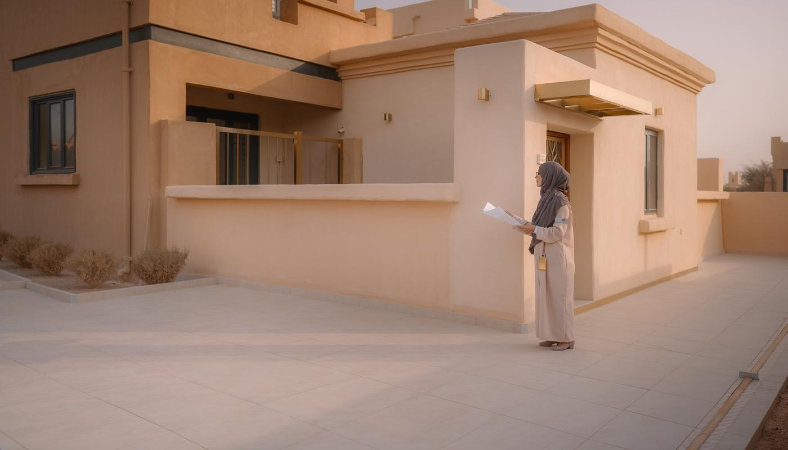

مقاول ملاحق وترميم | 0502833163
هل تفكر في إضافة مجلس أو غرفة جديدة، لكن منزلك يحتاج أيضًا إلى ترميم وتجديد؟ يثير الجمع بين البناء والإصلاح أسئلة كثيرة؛ أي الأعمال تبدأ أولًا، وكيف ترتبط خدمات الملحق بالمنزل، وما الذي يستحق تخصيص الميزانية له قبل اختيار التشطيبات؟
يساعد اختيار مقاول ملاحق وترميم على ترتيب احتياجات المشروع، بدءًا من فحص الأجزاء القديمة وتحديد المساحة المطلوبة، وصولًا إلى تنفيذ الإضافة وتجهيزها للاستخدام. وسنوضح في مقالنا اليوم خدمات بناء الملاحق وترميم الفلل والمنازل والشقق، وأهم مراحل التنفيذ، والعوامل التي تؤثر في التكلفة، وكيف تختار المقاول المناسب لعقارك.

مقاول ملاحق وترميم
يجمع مقاول ملاحق وترميم بين إنشاء مساحة إضافية وتأهيل أجزاء العقار الموجودة، وتظهر أهمية الجمع بينهما عندما يحتاج بناء الملحق إلى تمديدات جديدة أو تعديل مدخل أو إصلاح منطقة متضررة قرب الإضافة.
يفيدك التعامل مع جهة تفهم علاقة الأعمال ببعضها، لأن تجهيز غرفة خارجية يتجاوز بناء جدران وسقف؛ إذ يحتاج إلى إضاءة وتهوية وتكييف ومداخل تناسب الاستخدام، وربما يتطلب إصلاح الخدمات القديمة قبل توصيل الجديدة.
ويبدأ مقاول ترميم وملاحق في الرياض بتحديد طلبك بدقة، ثم يراجع ظروف الموقع ويشرح الأعمال الضرورية والاختيارات المتاحة. وتساعد البداية المرتبة على فصل الاحتياجات الأساسية عن الإضافات الجمالية التي يمكن تنفيذها لاحقًا.
خدمات مقاول ترميم وملاحق في الرياض
تختلف الخدمات بحسب حالة العقار والغرض من الملحق، لذلك يحتاج كل مشروع إلى حصر خاص بدل الاعتماد على قائمة عامة. وتشمل الأعمال التي يناقشها مقاول ترميم وملاحق في الرياض المجالات التالية:
1. إنشاء المساحات الإضافية
تشمل الإضافات مجالس الضيوف والغرف الخارجية والمكاتب المنزلية، ويُحدد توزيعها حسب المساحة والمداخل والخصوصية. ويراجع مقاول ملاحق وترميم مباني الرياض احتياجات الخدمة وطبيعة البناء قبل اعتماد التفاصيل التنفيذية.
2. إصلاح الأجزاء المتضررة
تتضمن الأعمال إزالة التشطيبات المفككة ومعالجة أسباب الرطوبة وإصلاح الأجزاء التي تستدعي التدخل، بينما تتطلب المشكلات الإنشائية تقييمًا متخصصًا يحدد طريقة المعالجة المناسبة.
3. تجديد المرافق والتشطيبات
يربط تجديد الأرضيات والدهانات والحمامات بأعمال الكهرباء والسباكة، ويُحدد أفضل مقاول ملاحق وترميم فلل ومنازل بالرياض ما يحتاج إلى استبدال وما يمكن الاحتفاظ به، حتى يخدم الإنفاق احتياجات العقار الفعلية.
بناء الملاحق وترميم الفلل والمنازل
تحتاج الفيلا إلى توزيع يراعي حركة الأسرة والضيوف، خصوصًا عند إضافة مجلس مستقل أو غرفة خارجية. ويُفضل تحديد مكان المدخل ودورة المياه وموقع التكييف قبل اختيار شكل الواجهة أو ألوان الدهانات.
يناقش أفضل مقاول ملاحق وترميم فلل ومنازل بالرياض أثر الإضافة في استخدام الحوش والممرات، ويبحث إمكانية تنسيق تشطيبات الملحق وأجزاء المنزل التي ستتجدد، حتى تبدو المساحات متناسقة بعد انتهاء الأعمال.
ويستفيد مقاول ترميم وملاحق في الرياض من معرفة سبب التوسعة؛ فاستقبال الضيوف يحتاج ترتيبات تختلف عن تجهيز غرفة لكبير سن أو مكتب للعمل. وكلما شرحت استخدامك اليومي، أصبح التصميم أقرب لاحتياجاتك وأقل عرضة للتغيير أثناء التنفيذ.
ترميم وتجديد الملاحق القديمة
تستحق الملاحق القديمة فحصًا قبل اتخاذ قرار هدمها أو تجديدها، فقد تكون المشكلة في تشطيبات تالفة أو عزل يحتاج إلى إصلاح، بينما تستدعي حالات أخرى تدخلًا أوسع بسبب حالة السقف أو الجدران أو الخدمات.
يفحص مقاول ملاحق وترميم صلاحية المكان للاستخدام المطلوب، ويحدد هل تكفي أعمال الإصلاح أم يلزم تعديل التوزيع وتجديد التمديدات. ويساعد تقييم الأجزاء السليمة على الاحتفاظ بما يصلح منها وتوجيه الميزانية إلى مواضع الاحتياج.
ويُراجع مقاول ملاحق وترميم مباني الرياض مناطق اتصال الملحق بالعقار، كما ينسق مقاول ملاحق وترميم شقق تجديد الغرف والمرافق التابعة للوحدة حسب حدودها وطبيعة المبنى، دون افتراض أن كل تغيير يمكن تنفيذه بالطريقة نفسها.
بناء الملاحق الأرضية والعلوية
يختلف اختيار مكان الملحق بحسب المساحة المتاحة وطبيعة العقار، ويحتاج مقاول ملاحق وترميم إلى مراجعة ظروف كل موقع قبل اقتراح نظام البناء. وفيما يلي نوضح الفروق الأساسية بين النوعين:
1. الملاحق الأرضية
تتيح الاستفادة من جزء من الحوش، ويُراعى فيها موقع المدخل وحركة السيارات والممرات وتصريف المياه. ويحدد مقاول ترميم وملاحق في الرياض الخدمات المطلوبة، ثم يناقش أعمال الأساسات والبناء وفق التصميم المناسب للموقع.
2. الملاحق العلوية
تحتاج إضافة ملحق فوق مبنى قائم إلى تقييم مختص لقدرة المبنى على تحمل الإضافة ومتطلبات الوصول والخدمات. ويستفسر مقاول ملاحق وترميم مباني الرياض عن المخططات والمعلومات المتاحة، ثم تُراجع الإجراءات المطلوبة قبل التنفيذ.
وتوضح المناقشة الأولى نطاق المشروع عندما تستخدم رقم مقاول ترميم وبناء ملاحق في الرياض ممتاز، خصوصًا إذا ذكرت منذ البداية هل الإضافة بالحوش أم السطح، وأرفقت صورًا ومقاسات تقريبية.
ترميم الشقق وتجديد المساحات الداخلية
تحتاج الشقق إلى عناية بالتفاصيل التي تؤثر في السكان والجيران، مثل نقل الخامات وإخراج المخلفات وحماية الممرات وتنظيم الأعمال المزعجة. ويشرح مقاول ملاحق وترميم شقق كيفية التعامل مع تلك الاحتياجات قبل تحديد موعد البدء.
يساعد تجديد التوزيع الداخلي على تحسين الاستخدام عندما تسمح حالة المبنى والتقييم الفني، بينما تُراجع أي تعديلات مؤثرة في العناصر الإنشائية أو الخدمات المشتركة بواسطة المختصين.
ويحدد مقاول ملاحق وترميم شقق ترتيب الغرف والمرافق التي ستُجدد، خصوصًا أثناء استمرار السكن. كما يستفسر أفضل مقاول ملاحق وترميم فلل ومنازل بالرياض عن إمكانية إخلاء مناطق العمل، لأن ظروف الإشغال تؤثر في تنظيم التنفيذ والمدة المتوقعة.
معالجة التشققات والتسربات قبل بناء الملحق
تحتاج الإضافة الجديدة إلى محيط سليم، لذلك تستحق التشققات والتسربات القريبة من موقع البناء فحصًا قبل إغلاقها بتشطيبات جديدة. ويُجنبك معالجة السبب مبكرًا تلف أجزاء أنفقت عليها لاحقًا.
يراجع مقاول ملاحق وترميم مصدر الرطوبة بدل الاكتفاء بمكان ظهور البقعة، فقد يرتبط التلف بتمديدات أو سطح أو تفاصيل تصريف، وتُختار المعالجة بعد تحديد السبب.
ويلاحظ مقاول ملاحق وترميم مباني الرياض طبيعة الشقوق ومواقعها، ويطلب التقييم المتخصص عند الحاجة. ويُفضل أن تسأل عبر رقم مقاول ترميم وبناء ملاحق في الرياض ممتاز عن خطوات الفحص المقترحة، وطريقة توثيق الأعمال التي ستُغطى بعد الإصلاح.
مراحل تنفيذ أعمال الملاحق والترميم
يسهّل تقسيم المشروع إلى مراحل متابعة التنفيذ ومراجعة الاختيارات، ويمنع بدء التشطيبات قبل اكتمال الأعمال التي تعتمد عليها. وينظم مقاول ملاحق وترميم مراحل المشروع على النحو التالي:
1. تحديد الاحتياجات ومعاينة العقار
تُسجل المساحات وحالة الأجزاء القديمة والاستخدام المطلوب للملحق، ويُراجع أفضل مقاول ملاحق وترميم فلل ومنازل بالرياض أولويات الأسرة وحدود الميزانية قبل إعداد نطاق الأعمال.
2. إعداد التصميم وحصر البنود
تُحدد مواقع الغرف والمداخل والخدمات، ثم تُعد مقايسة توضح الأعمال والكميات والمواصفات والاستثناءات. ويُناقش مقاول ترميم وملاحق في الرياض تفاصيل المواد والاختيارات قبل شراء الخامات.
3. مراجعة المتطلبات وتجهيز الموقع
تُراجع الإجراءات والتقييمات المطلوبة حسب طبيعة المشروع، ثم تُجهز مناطق العمل وتُحمى الأجزاء التي ستبقى، ويُحدد مكان تخزين المواد وطريقة إخراج المخلفات.
4. تنفيذ البناء والإصلاح والتأسيس
تُنفذ الأعمال بحسب ارتباطها ببعضها، ويُنسق إصلاح الأجزاء المتضررة وتمديد الخدمات وتجهيز العزل قبل إغلاق الأسطح أو تركيب الكسوات، حتى تقل الحاجة إلى إعادة التكسير.
5. فحص الأعمال واستكمال الملاحظات
تُراجع التركيبات والتشطيبات والخدمات، وتُسجل الملاحظات ويُتفق على استكمالها. ويحتاج مقاول ملاحق وترميم شقق إلى التأكد من نظافة مناطق الحركة وسلامة الأجزاء التي حُميت أثناء التنفيذ.
العزل والتشطيب في مشاريع الملاحق والترميم
يؤثر العزل في راحة استخدام الملحق وحماية تشطيباته، لكن جودة النتيجة ترتبط بنظام البناء وتفاصيل التركيب والفتحات والسقف، لذلك يُحدد نطاقه بما يناسب المشروع.
يراجع مقاول ملاحق وترميم ميول الأسطح ومواقع التصريف ونقاط مرور التمديدات، ويشرح المواد المقترحة وطريقة فحص التنفيذ قبل التغطية. وتساعد مراجعة التفاصيل على تقليل احتمالات ظهور التسربات بعد تركيب الأرضيات أو الدهانات.
ويُنسق مقاول ملاحق وترميم شقق اختيارات التشطيب وفق ظروف الغرفة أو المرفق، بينما يناقش أفضل مقاول ملاحق وترميم فلل ومنازل بالرياض توافق تشطيبات الإضافة والأجزاء المجددة، حتى تتوازن سهولة التنظيف والمتانة والمظهر.
تكلفة بناء الملاحق وترميم المنازل بالرياض
تتغير التكلفة بحسب مساحة الإضافة وحالة العقار ونوع البناء ومستوى التشطيب، كما تؤثر أعمال الإزالة وتحديث الخدمات وصعوبة الوصول إلى الموقع في إجمالي العرض.
اطلب عرضًا تفصيليًا عندما تتواصل عبر رقم مقاول ترميم وبناء ملاحق في الرياض ممتاز، وتأكد من إدراج المواد والعمالة والنقل والمخلفات وبنود الفحص، حتى تعرف ما يغطيه السعر وما سيُحسب منفصلًا.
ويحدد مقاول ملاحق وترميم مباني الرياض الكميات بعد المعاينة، لأن عقارين متساويين في المساحة يمكن أن يختلفا في حجم الإصلاح المطلوب. ويساعد ترتيب الأولويات وتثبيت الاختيارات على ضبط الإنفاق وتقليل تكلفة التغييرات أثناء التنفيذ.
اختيار مقاول ملاحق وترميم يناسب مشروعك
تبدأ المقارنة الجيدة بخبرة قريبة من مشروعك، ثم تنتقل إلى تفاصيل العرض والعقد وطريقة الاستلام. وتساعدك المعايير التالية على تقييم المقاول قبل الاتفاق:
1. مراجعة أعمال مشابهة
اطلب أمثلة قريبة من نوع الإضافة أو الترميم المطلوب، واسأل عن الأعمال المنفذة داخل كل مشروع. ويحتاج اختيار مقاول ملاحق وترميم شقق إلى خبرة تناسب ظروف المباني المأهولة والخدمات المشتركة.
2. فهم العرض والعقد
راجع المواصفات والمدة والدفعات والمسؤوليات، وحدد آلية اعتماد التغييرات والأعمال الإضافية. ويشرح أفضل مقاول ملاحق وترميم فلل ومنازل بالرياض البنود التي تحتاج إلى اختيار منك قبل بدء التنفيذ.
3. الاتفاق على المتابعة والاستلام
حدد المسؤول عن التواصل ومراجعة المراحل والملاحظات، واسأل عن الضمان المكتوب ونطاقه إن وُجد. ويُفيد استخدام رقم مقاول ترميم وبناء ملاحق في الرياض ممتاز في مناقشة تلك التفاصيل قبل الالتزام المالي.
ابدأ تجديد عقارك وإضافة ملحقك عبر خدمات الرياض
تستحق فكرتك نقاشًا يربط مساحة الملحق وحالة المنزل واحتياجات الأسرة، ويمكنك زيارة موقع شركة خدمات الترميم والهدم في الرياض والتواصل لعرض مشروعك والاستفسار عن أعمال الترميم ونطاق الخدمة المطلوب.
جهز صور العقار والمساحة المتاحة، وحدد الأجزاء التي تحتاج إلى إصلاح والاستخدام الذي تتطلع إليه بعد البناء. وتساعد المعلومات على شرح طلبك لمقاول ملاحق وترميم ومناقشة الخطوة المناسبة لتقييمه، سواء كان هدفك مجلسًا إضافيًا أو تأهيل ملحق قديم أو تجديد مرافق المنزل.
اجعل تواصلك عبر رقم مقاول ترميم وبناء ملاحق في الرياض ممتاز بداية لجمع التفاصيل، واسأل عن المعاينة والبنود المتاحة وطريقة إعداد عرض يناسب احتياجاتك.
تواصل معنا على 0502833163، وشاركنا صور المساحة وأولويات التجديد لبحث طلبك والاستفسار عن تجهيز ملحق يخدم استخدامك اليومي.
الخاتمة
يمنحك مشروع الملاحق والترميم فرصة لتوسيع مساحة الاستخدام وتحسين الأجزاء القديمة في الوقت نفسه، وتبدأ الاستفادة بتحديد احتياجاتك وفحص العقار وترتيب الأعمال قبل شراء المواد.
اختر مقاول ملاحق وترميم يفهم تفاصيل مشروعك ويشرح نطاق التنفيذ، وراجع العقد والمواصفات وطريقة حساب التغييرات، ثم تابع المراحل المهمة قبل تغطيتها بالتشطيب. وتساعدك تلك الخطوات على توجيه ميزانيتك إلى إضافة نافعة وإصلاحات تعالج الاحتياج، بدل إنفاقها على أعمال تضطر إلى تعديلها بعد التسليم.
الأسئلة الشائعة
هل يمكن تنفيذ بناء الملحق والترميم في مشروع واحد؟
نعم، يمكن تنسيقهما ضمن مشروع واحد إذا حُدد نطاق كل جزء وترتيب الأعمال، وتساعد الخطة المشتركة على تنظيم التمديدات والتشطيب وتقليل تداخل الفرق.
كيف تُحسب تكلفة أعمال الملاحق والترميم؟
تُحسب حسب الكميات وحالة العقار ونظام البناء والخامات والأعمال المطلوبة، وتصبح المقارنة أدق عندما تشمل العروض البنود والمواصفات نفسها.
هل يمكن البقاء في المنزل أثناء الترميم؟
يمكن ذلك في بعض الأعمال الجزئية إذا أمكن فصل منطقة التنفيذ وحماية السكان، بينما تحتاج المشروعات الواسعة إلى ترتيبات تناسب الغبار وانقطاع الخدمات وحركة العمال.
متى يلزم فحص المبنى قبل إضافة ملحق؟
يلزم تقييم مختص عند الإضافات المؤثرة في الأحمال أو التعديلات الإنشائية، وتستدعي علامات التلف المحتمل مراجعة فنية قبل اتخاذ قرار التنفيذ.
هل يشمل الترميم تجديد الكهرباء والسباكة؟
يشملهما عندما تستدعي حالتهما التجديد ويُدرجان ضمن الاتفاق، ويُفضل تحديد المواد والأجزاء المشمولة والفحوصات المطلوبة في المقايسة.
كم تستغرق أعمال بناء الملحق وترميم المنزل؟
تختلف المدة بحسب مساحة المشروع ونطاق الإصلاح والتجهيزات والمتطلبات السابقة للتنفيذ، ويُحدد جدول أقرب للواقع بعد المعاينة وحصر الأعمال واعتماد الاختيارات.
مقالات ذات صلة قد تفيدك
- مقاول ملاحق الرياض | بناء ملاحق الحوش والأسطح
- مقاول ملاحق اسمنت بورد بالرياض | التركيب والتكلفة
- مقاول استراحات الرياض | بناء استراحات وشاليهات
- خدمات ترميم المباني بالرياض
تحتاج معاينة أو عرض سعر لمشروعك؟
أرسل لنا مساحة المشروع وموقعه ونوع الأعمال المطلوبة، وسنساعدك على تحديد الخطوة التالية.
اطلب التواصل الآن